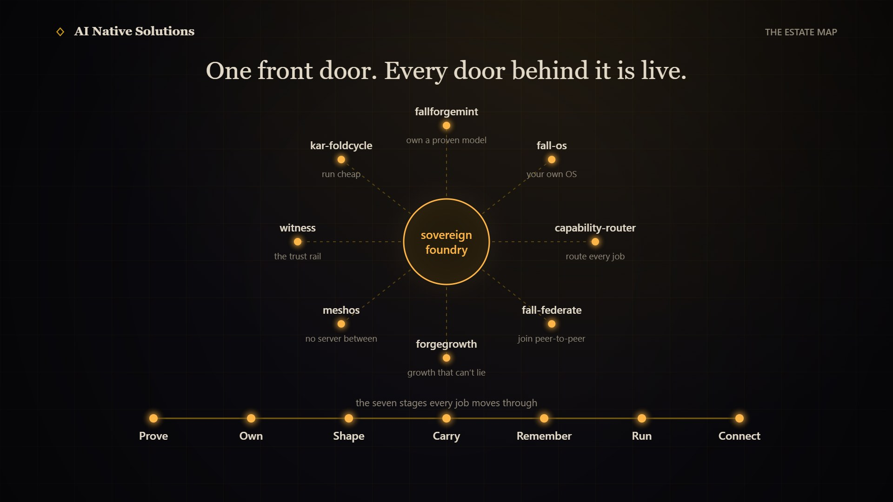

Software is getting
close to free.
What stays rare is proof that it works, and owning the system it runs in. fall-os is a system built on that bet. 1,700+ public projects already stand on it.
These are the plain-words slides. The first edition was written for experts in September 2026, and it is kept as it was: read the first edition. The numbers here are the same numbers.
Pick the size. Make it. Test it.
The sizer names the smallest open AI that should pass your test. It can pick from about 1 billion to about 200 billion in size. It shows every reason, and it never picks a bigger one just to sell more. You make it from a few of your own examples. Then it is tested on examples it was not given.

A scorecard that can say you lost.
review-1b scored 9/16. The AI it grew from scored 4/16. The verdict: BEATS. Against an AI about 7 times its size it scored 9/16 to 11/16. The verdict: LOSES. The test examples were not in the recipe the AI was given, and anyone can run the test again.

One front door. 9 of 9 doors live.
Seven steps in one line. A sorter puts each job in a pile. 7 parts run on their own. 9 wait for a person. 8 are marked as not built yet. Every door on the map opened when we tried it on 2026-09-28.

You rent every part of your own business.
A small firm today pays per person, per tool, per month. It pays again each time it asks an AI a question. The tools do not talk to each other. The joining-up is never done. And the record of your own work piles up on someone else's computers.
- The cost grows with each hire — each new person adds to every bill.
- Nothing fits together — twenty sellers, twenty data formats, and joining-up work that never ends.
- Your own work is the product — kept, mined and used to train an AI you do not own.
- Nothing can be proved — “it works” is a claim you cannot test for yourself.
When code costs nothing to make, the worth moves.
Making the code is no longer the hard part. Two things become rare. Both come from how the system is built.
Proof
If anyone can make a tool that looks right, the question is whether it is right. Proof that anyone can run again becomes the thing of worth.
Ownership
If the software is cheap, paying rent on it for ever makes no sense. What you want is the system itself, on your own machines.
That is the whole idea, and we built to it. There is a way to prove code that anyone can run again. And there is a system you own and do not rent.
One core. One conductor. Many tools.
You tell a conductor what you want in plain words. It runs on your own AI and works from your own files. It builds what you ask, and proves it before it ships. Every tool plugs into the same core. That is why a hundred tools act as one system.
The core
One routine that every tool calls. Lay out the choices. Score them against one shared pass mark. Pick on purpose. Keep the answer.
The conductor
One loop: explore, settle, check, build, remember. It calls the tools. They never run loose.
The tools
Bookings, books, legal, memory and AI workers. Take the ones you need. Add more later. Drop any of them.
What Konomi really is.
Konomi is one format that holds many standards. It comes from factory control, where the standards are strict. It carries ISA-95, ISA-88, ISA-101, ISA-18.2, OPC-UA, MQTT Sparkplug and Modbus in a form a computer can read. It maps each one to the others. So a thing defined once is right everywhere it is used.
Its other half is konomigami, a set of rules for folding. There are seven basic folds. Each one turns one shape into the next. Done in order on a flat sheet, they make a structure.
| Fold name | What the fold is | Factory level |
|---|---|---|
| Ground | identity / base | L0 · physical |
| Wave | valley fold | L1 · sensing |
| Gate | mountain fold | L2 · control |
| Sink | vertex inward | L3 · operations |
| Reverse | direction reversal | L4 · business |
| Petal | open and flatten | L5 · enterprise |
| Collapse | full collapse | L6 · observer |
Seven folds and six changes can build any structure. So the whole stack is told in one set of rules, from a sensor on a machine to a company's books. It is not seven sets that do not match. That is why tools built this way fit together with no extra work.
Your machines first. Outside AI only if you choose.
Each request goes to the cheapest part that can handle it. Easy work is done by plain rules, or by an AI on your own computer, at no extra cost. A paid AI is used only when you allow it. Then your key goes straight to that firm, with no one in between.
- On your own hardware — built-in rules, an AI in the browser, then an AI on your own computer.
- Your choice, and never needed — free and top outside AI, under your own account.
- Private by design — a request cannot reach a level you have not allowed. The outside firm is simply never called.
It runs on what you already own.
There is no smallest spend to start. The lowest steps need no special hardware at all. Each step up keeps more work on your own machines. The system runs at every step.
A phone
The tools are single files that work with no signal. A worker can run bookings, jobs and checklists from a phone in the field.
A £500 laptop
Plain rules and an AI in the browser cover the easy work, with nothing installed. This is the honest floor: an ordinary computer, with no special chip.
A desktop or Mac Studio
Add an AI on your own computer. Then most day-to-day requests never leave the room, and bring no bill.
A tower rig
Bigger AI models for the heavy work. Spare and written-off machines become useful again.
Our bet is that good structure beats size. Better memory, better sorting and better proof do more of the work than a bigger AI, for what most firms really do. Which step you need depends on your work. You can measure it yourself before you spend anything.
Better memory, not more searching.
Most firms bolt a search system onto an AI. For every question it fetches bits of text that look alike. It never gets sharper. It is the same search, the same noise, and a bill that never ends.
We file memory by what it says, link it by meaning, and tidy it while the system rests. Copies are merged. Facts that follow from other facts are written down. Rules are drawn out. Clashes are settled by the weight of proof. It gets better overnight with no new training.
Measured, not just said: the same day of memories went in. One rest later, it answered questions it could not answer before. The AI itself was not changed.
Nothing ships on a claim. Everything ships on a proof.
A test changes one small thing in the code at a time. The code's own tests must catch it. Tests that cannot spot broken code do not count as a pass. It runs on every change, and anyone can run it.
witness
A fixed test that breaks the code on purpose and throws junk at it. It is packed so any project can use it.
acg-assessor
A fixed marking sheet. The same project gets the same verdict. No one marks their own work.
Proof-of-play
Skill is shown on a fixed piece of work, with a fixed marker. A claim someone marked for themselves fails when it is marked again.
AI workers that find their own weakest point.
An AI worker's work is played back, the same way each time. Seven checks read the playback and find the skill it is worst at. We call that its shadow. It is found from evidence, not from what the worker says about itself.
Then the shadow is put to work. The next round is pushed to fix it. The score is the work, minus the weakness that is left. So a worker cannot win by being good on average while hiding one bad blind spot.
- Tested against a blind control group — the treated group beat it, across repeated runs. The exact figures are in the first edition.
- With a limit we publish — below a certain group size and strength, it does not help at all. Above that line, it beat the control on every run.
- Memory as short lessons — each lesson is kept as one line. The full record fades, and the fix stays.
- It closes the loop — the test proves the code is right. The clinic proves the worker is getting better.
The honest answer to “does it always work?” is no. It works above a stated line, and we publish that line.
Four checks, and an AI worker that cannot overspend.
AI with no limits is why most AI trials never go live. Here the limits are part of the system. They are not promises in a rule book.
- Built right — a fixed marking sheet marks how the code is built, the same way each time.
- Proved by test — the tests must catch broken code before anything ships.
- Alive — a check tells a running tool from a dead one.
- Within budget — each AI worker's signed name is its permit and its budget. It cannot spend past what it holds.
On top of that, the conductor never acts alone. It gets things ready and suggests, and a person makes the choice. On law or money, a tool will flag what it cannot check, and not bluff. It points you to free human help. Work and pay are written to a signed record that shows any change. They settle on Thomas Frumkin's onlybrains base. So what an AI worker did, and what it earned, can be proved.
Not a test model. A whole estate.
Tools for accounting, law, insurance and clinics. Tools for a big firm's data, books, charts and app-building. Bookings, cleaning rotas and inbox. Lists and pay for AI workers. Memory, links from device to device, and proof. These counts are from September 2026.
The software, and the firm you pay to run it.
The costly part of a business is rarely the licence. It is the outside firm you keep on call. These tools do that work, and you own them.
- Accounting — a system to run the practice, accounts for one-person firms and trades, and proper double-entry books.
- Legal — a legal helper you own, and a guide to your rights to redress. Its letters name the law, with a guard on what cannot be checked.
- Insurance and clinics — toolsets shaped to the practice, each in one file, that work with any AI.
- Big firms — data, charts, an app builder and books, with no giant platform.
- Sales and marketing — a team of AI workers that pull together, in one file you own.
What really changes.
| Rented | Owned | |
|---|---|---|
| Cost | Per person, per tool, per month, for ever. | Own what you take. No seats, no renewals. |
| Running the AI | Every request is billed. | Easy work runs on your own hardware, at no extra cost. |
| Data | Uploaded, kept, and used to train someone else's AI. | It stays on your machine. Several of our core parts cannot use a network at all. |
| Energy | A trip to a far-off data centre for every question. | Answered on the computer on your desk. Even old hardware is enough. |
| Working together | A seller's server sits in the middle. If it stops, you stop. | Devices sync with each other. Work done with no network joins up cleanly later. |
| Trust | A sales claim you cannot test. | A test you can run yourself. |
How much cost, time and energy you save depends on which tools you replace and how you work. So we show how it works, not one big headline number. Here is what you can check today. There is no fee per person, and no bill per use for work your own AI handles. Your data is not uploaded. No seller sits between your own devices.
Take only what you need.
It is not a bundle you must take whole. Take bookings and billing, and leave the charts. Add a third tool next year. Every tool is built on the same core and speaks one contract, so they fit together. There is no project to join them up. And when the core gets better, everything you own gets better.
Thirty systems that never spoke to each other.
A big firm is not short of software. It has a finance system, a customer list, a document store, and reporting tools from firms it bought. AI trials sit beside all of it. No two systems agree on what a customer or a bill is. So the joining-up never ends, and the AI cannot think across the whole firm.
fall-os fixes this where it starts: one shared contract every system speaks, and one conductor that thinks across all of them. Old systems are wrapped at the edge, not torn out. Their own workings are not touched.
- An accounting firm with ten offices — one meaning of “client” in every office. Drafts and checks run on the firm's own machines, so client papers never leave.
- A group in many countries — each region's system is wrapped onto one contract. Adding up becomes one question, not a project every quarter. AI workers carry signed budgets, which lets a board say yes.
- A listed company — a test anyone can run again, a record of what was picked and what was not, and no server holding the data.
- A private mid-size firm — wrap the two systems too risky to leave, and stop paying per head for software.
The design is the same at every size, because the systems join where the choices are made. One person runs the same system, smaller.
Why 1,700+ projects are one system.
Every build does the same four things. It lays out choices. It scores them against one shared pass mark. It picks on purpose. It remembers what it picked and what it passed over. A booking tool, a legal tool, a memory tool and a market look different on top. Underneath they are the same.
So joining them is not a big project. Each build is pointed at the shared core for those four things, and signs up with the conductor. Its own workings are not touched.
- Raise the pass mark once — every tool's judgement gets better at once.
- One way in — plain words for everything, not a hundred screens.
- One memory — results, and what was passed over, are tidied together and not lost in logs.
- One standard of proof — a build that cannot pass the test does not get in.
- One set of names — firm limits and provable work across everything.
The builds join where the choices are made. So each gain reaches everything. It is the only reason so many projects can be looked after at all.
The path, already in view.
- The rent stops. Three or four paid plans become owned tools that do the same job, on machines you already have. Nothing about the work changes.
- The helper moves inside the work. It is not a chat window to visit. A conductor drafts from real facts, flags what it cannot check, and waits for a person to say yes. Easy questions cost nothing, so you ask freely.
- Memory becomes the edge, and it is yours. Six months in, it answers what it could not at the start, because what it knows is better arranged. It sits on your own machine.
- Work is handed over. Each tool has its own limits and a signed budget: about nine parts machine to one part person. You can show an inspector how it is kept safe.
- What you build is worth something. You can publish it, and a buyer's own test sets its worth. Each copy keeps its history.
- AI workers trade with AI workers. Signed names, hard budgets, checked work and records that show any change. It was the part we built first.
None of this needs a breakthrough. Every step runs today, in public, with the test behind it. The open question is not whether it works. It is how fast the costs force the change, and they push one way.
Standing on Thomas Frumkin's work.
The base of all this is Thomas Frumkin's work, and the credit is his. These all began with him: the design it is named for, the standard it speaks, and the links from device to device. So did the guild's way of marking, and the base that work settles on.
- Copied openly, with the history kept — Regulus, the health engine. It was copied from teslasolar/regulus and put through our test. The project itself records where it came from.
- Built to a published design — konomigami, the 紙 Geometric Fold Architecture: seven folds over a flat sheet. We built it as konomigami-lib and the konomi-cube fold engine. Each one credits his input in its own notes. There was no project of his to copy. The design was published, and we built it.
- Standards we took up — the Konomi Standard (ISA-95, ISA-88, ISA-101, ISA-18.2, OPC-UA, MQTT Sparkplug and Modbus, each mapped to the others) and KonomiLang. They are the shared contract our tools speak.
- The guild — the way of marking work of the AI Craftspeople Guild. Our fixed marking sheet carries its initials.
- Where work is settled — onlybrains, where signed work is recorded and tracked.
- Device to device — kp2p, Konomi peer-to-peer. Devices sync with each other, with no server in the middle. It is how our tools work together in the browser.
- One AI leading others — the CASSIE line: one AI that leads a team of expert AI helpers. We carried it into our own work with many AI workers.
- Roots in factory control — GitPLC, GitHMI, GitSCADA, GitTAG and ISA 5.1 work. This is the factory setting the standard was proved in.
How each came to us, for the record. Regulus keeps its history in the project itself. konomigami and the rest were published as a design and a standard, and built here, and each project credits his input. There are two routes and one source. Where a build began as his work, it was copied in the open, not quietly remade.
Own the system. Prove the work.
One core, one conductor, and as many tools as you need. They run on machines you already own, and work from your own files. Behind every build is a test that anyone can run.